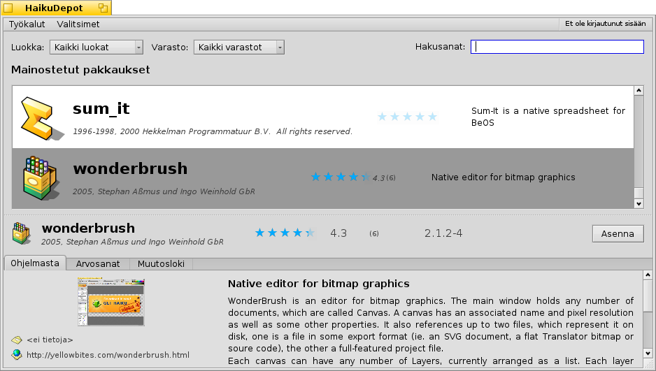

Suomi
Suomi Français
Français Deutsch
Deutsch Italiano
Italiano Русский
Русский Español
Español Svenska
Svenska 日本語
日本語 Українська
Українська 中文 ［中文］
中文 ［中文］ Português
Português Slovenčina
Slovenčina Magyar
Magyar Português (Brazil)
Português (Brazil) Català
Català Polski
Polski Română
Română English
English| Hakemisto |
| Suodatin Luettelo Tietoalue Työkalut ja valitsimet Käyttäjätilin luominen Arvosanat ja kommentointi |
HaikuVarasto
| Työpöytäpalkki: | ||
| Sijainti: | /boot/system/apps/HaikuDepot | |
| Asetukset: | ~/config/settings/HaikuDepot/ |
HaikuVarasto on keskeinen sovellus ohjelmistopakkaustesi hallintaan. Sovelluksella voit selata ja etsiä pakkausvarastoja (joita kutsutaan myös "varastot") sekä asentaa, päivittää ja poistaa pakkauksia. HaikuVarasto alkaa Mainostetut pakkaukset-luettelolla, jossa on ohjelmistoja, jotka tuntuvat kiinnostavan monia käyttäjiä. Heti kun kirjoitat termin hakukenttään tai valitset luokan, näyttö vaihtaa pienempään kuvakkeeseen ja sarakkeisiin järjestetään lisätietoja.
 Suodatin
Suodatin
Ylimpänä löydämme muutamia keinoja suodattaa alla saatavilla olevien pakkausten luetteloa:
ponnahdusvalikko sallii sinun rajoittaa luettelon yksittäisiksi luokiksi kuten "Audio" tai "Pelit".
ponnahdusvalikko määrittää, mitkä verkkovarastot kysellään tai jos näytetään vain ne asennetut pakkaukset, jotka on asennettu jostain muualta kuin verkkovarastosta ("Paikallinen"). Ehkä USB-tikulta tai joltain webbisivulta ladatut tai pakkaukset, jotka olet rakentanut itse.
-tekstikenttäsuodattimet sitten luetteloivat ne pakkaukset, jotka on kirjoitettu (välilyönneillä eroteltuina) merkkijonoina niiden nimissä tai kuvauksissa.
Luettelo
Kuten mikä tahansa Seuraaja-ikkuna, voit valita asiayhteysvalikosta mitkä sarakkeet näytetään napsauttamalla sarakeotsaketta hiiren kakkospainikkeella. Ykköspainike lajittelee luettelon tuon sarakkeen mukaiseksi. Tietysti voit järjestää sarakkeet uudelleen raahaamalla ne uuteen paikkaan.
Pakkauksen tilasarakkeessa voi olla yksi seuraavista tiloista:
: Pakkaus on asennettu ja valmiina käytettäväksi.
: Pakkaus on tässä varastossa ja se voidaan ladata ja asentaa. Jos pakkauksella on riippuvuuksia muihin pakkauksiin, sinulle kerrotaan siitä asennuksen aikana ja tarjotaan mahdollisuus ladata/asentaa kaikki välttämätön.
: Odottaa näytetään pakkaukselle, jota jonotetaan lataukseen/asennukseen. Pakkauksen latauksen aikana edistyminen näytetään prosentteina.
: Asennettuun pakkaukseen on saatavilla uudempi versio.
Voit tarttua pisteviivaan pakkausluettelon välissä ja vaakasuora tietoalue muuttaa pakkausluettelon kokoa.
Tietoalue
Alimmaisena on alue, joka näyttää tietoja pakkauksesta, joka on parhaillaan valittuna luettelossa.
Pakkausnimen, tekijän, arvosanan ja version oikealla puolella on painike, joka – riippuen pakkauksen nykyisestä tilasta – sallii sinun , tai se. Jos pakkaus on jo asennettu, löydät täältä lisäpainikkeen, joka sovelluksen.
Alla on kolme välilehteä: Ohjelmasta, Arvosanat, ja Muutosloki.
Ensimmäisessä välilehdessä on yksityiskohtainen pakkauskuvaus sekä kuvakaappaukset ja yhteystiedot ja pakkausta ylläpitävän ryhmän verkko-osoite, jos sellainen on saatavilla. Kuvakaappauksen pienoiskuvan napsauttaminen avaa uuteen ikkunaan kuvan suurikokoisemman version
Toisessa välilehdessä näytetään arvosanat ja käyttäjäkommentit, jos niitä on saatavilla.

Vasemmalla on tilasto, joka näyttää kuinka monelta käyttäjältä pakkaus sai tietyn määrän (1...5) tähtiä.
Keskellä on käyttäjäkommentteja käyttäjätunnuksilla, heidän antamiensa tähtien määrä ja mistä pakkausversiosta he antoivat arvosanan tai kommentin. Löydät lisätietoja siitä kuinka voit itse antaa pakkaukselle arvosanan alempaa.
Pienellä ylöspäin tai alaspäin olevalla peukalolla voit näyttää mielipiteesi tietystä kommentista.Viimeisessä välilehdessä näytetään pakkauksen kaikkien toistaiseksi julkaistujen versioiden yksityiskohtainen historia.
Työkalut ja valitsimet
-valikossa ikkunan yläosassa löydät rivin . Tämä pyytää varastoista ajantasaisen luettelon saatavilla olevista pakkauksista.
Valikosta voit valita myös ja pakkausluetteloon. Tavalliset käyttäjät eivät ole niistä kiinnostuneita ja ne sotkisivat luetteloa. Ne ovat kuitenkin tarpeita niille ihmisille, jotka tarvitsevat kirjastoja, otsakkeita jne. pakkauskehitykseen ja niistä riippuvien ohjelmien kääntämiseen.
Kahdesta muusta aiheesta lisää kiinnostuneille valikosta löytyy ja , jotka ovat aika itseään selittäviä.
Käyttäjätilin luominen
Voidaksesi antaa pakkaukselle arvosanan sinulla on oltava tili Haiku Depot-palvelimella, joka palvelee kaikkia pakkauksia ja kirjaa arvosanat sekä käyttäjäkommentit. Voit luoda tilin HaikuVarasto-sovelluksella napsauttamalla valikon oikeassa yläkulmassa, jossa näytetään nykyinen tila: . Valinta avaa ikkunan kahdella välilehdellä; yhdellä voit kirjoittaa käyttäjätunnuksesi ja salasanasi (sitten kun sinulla on ne) kirjautuaksesi, ja toisessa luot uuden tilin:

Tilin luomiseksi sinun on:
- käytettävä käyttäjätunnusta, joka koostuu pienistä kirjaimista ilman erikoismerkkejä (äöå)
- käytettävä salasanaa, jossa on vähintään 8 merkkiä, joista vähintään 2 on suuria kirjaimia ja 2 numeroita
- tarjottava sähköpostiosoite (jos haluat uuden salasana lähetettäväksi siinä tapauksessa että unohdat sen)
- ratkaistava captcha-kuva-arvoitus
Kirjautumisen jälkeen HaikuVaraston valikon yläoikealla lukee , mikä näyttää käyttäjätunnuksesi. Valikko tarjoaa nyt sinulle tai .
Arvosanat ja kommentointi
Kun olet luonut käyttäjätilin ja kirjautunut sisään, voit antaa pakkaukselle arvosanan ja jättää kommentin, jos haluat. Liikuta vain hiiren kohdistinta pakkauksen tietoalueen arvosanatähtien päällä ja ne muuttuvat -painikkeeksi. Napsauta sitä arvosanaikkunan avaamiseksi:

Tässä liikutat hiiren kohdistinta tähtien yläpuolella niiden sytyttämiseksi ja arvosanasi valitsemiseksi, voit myös valita tasonumeron sovelluksen stabilisuusarvioksi ja poimia valinnaisen kommentin kielen. Jotta kommentti olisi merkityksellinen, sinun pitäisi työskennellä sovelluksella, jota arvioit tutustuaksesi sen ominaisuuksiin, ohjelmointivirheisiin ja oikkuihin. Ja älä kirjoita seuraa suomalaista suurromaania... pidä se lyhyenä, lempeänä ja kohteliaana. :)
-painikkeen napsauttamisen jälkeen tiedot lähetetään palvelimelle. Sinun on ehkä siirryttävä -valikkoon valitsemaan ennen kuin voit nähdä muutoksesi.
Milloin tahansa voit palata ja muokata kommenttiasi tai antaa arvosanan uudelleen. Voit myös piilottaa arvioinnin muilta käyttäjältä poistamalla valinnan valintaruudusta .